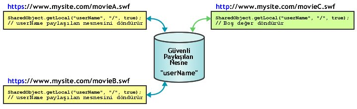

| Paket | flash.net |
| Sınıf | public class SharedObject |
| Miras Alma | SharedObject |
| Dil Sürümü: | ActionScript 3.0 |
| Çalışma Zamanı Sürümleri: | AIR 1.0, Flash Player 9, Flash Lite 4 |
Şunları gerçekleştirmek için paylaşılan nesneleri kullanın:
-
Yerel olarak kalıcılığı sağlama. Bu paylaşılan bir nesneyi kullanmanın en kolay yoludur ve Flash Media Server gerektirmez. Örneğin, uygulamada belleğe sahip hesap makinesi gibi bir paylaşılan nesne oluşturmak için
SharedObject.getLocal()öğesini çağırabilirsiniz. Kullanıcı hesap makinesini kapattığında, Flash Player kullanıcını bilgisayarında bulunan paylaşılan nesnedeki son değeri kaydeder. Hesap makinesi bir sonraki çalıştırılışında daha önce sahip olduğu değerleri içerir. Alternatif olarak, hesap makinesi uygulaması kapatılmadan önce paylaşılan nesnenin özelliklerininullolarak ayarlarsanız, uygulama bir sonraki çalıştırılışında herhangi bir değer olmadan açılır. Yerel olarak kalıcılığı sağlamanın bir başka örneği, kullanıcının bir haber sitesinde hangi makaleleri okuduğunun kaydı gibi, karmaşık bir siteye yönelik kullanıcı tercihleri ve diğer verileri izlemektir. Bu bilgileri izlerseniz, yeni ve okunmamış makalelerden farklı olarak daha önceden okunan makaleleri de görüntüleyebilirsiniz. Bu bilgileri kullanıcının bilgisayarı üzerinde saklarsanız sunucudaki yük azalır. -
Flash Media Server üzerinde veri saklama ve paylaşma. Paylaşılan bir nesne, diğer istemcilerin alabilmesi için sunucu üzerinde veri saklayabilir. Örneğin, bir telefon listesi gibi sunucu üzerinde kalıcı olan uzak bir paylaşılan nesne oluşturmak için
SharedObject.getRemote()öğesini çağırın. İstemci paylaşılan nesneye her değişiklik yaptığında gözden geçirilmiş veriler, o anda nesneye bağlı olan veya daha sonra bağlanan tüm istemciler tarafından kullanılabilir. Nesne de yerel olarak kalıcıysa istemci, sunucuya bağlı değilken verileri değiştirir. İstemci nesneye sonraki bağlanışında veriler, paylaşılan uzak nesneye kopyalanır. - Gerçek zamanlı veri paylaşma. Paylaşılan bir nesne, gerçek zamanda birden çok istemci arasındaki verileri paylaşabilir. Örneğin, nesneye bağlı tüm istemciler tarafından görülebilen bir sohbet odasına bağlı kullanıcıların bir listesini saklayan uzak bir paylaşılan nesne açabilirsiniz. Bir kullanıcı sohbet odasına girdiğinde veya odadan ayrıldığında nesne güncellenir ve nesneye bağlı tüm istemciler, sohbet odası kullanıcılarının gözden geçirilmiş listesini görür.
Yerel bir paylaşılan nesne oluşturmak için SharedObject.getLocal() öğesini çağırın. Uzak bir paylaşılan nesne oluşturmak için SharedObject.getRemote() öğesini çağırın.
Bir uygulama kapatıldığında paylaşılan nesneler boşaltılır veya bir diske yazdırılır. Ayrıca bir diske açıkça veri yazmak için flush() yöntemini çağırabilirsiniz.
Yerel disk alanı önemli noktaları. Yerel paylaşılan nesneler, uygulamanızı tasarlarken üzerinde durmanızın önemli olduğu bası sınırlamalara sahiptir. Bazen SWF dosyalarının yerel paylaşılan nesneleri yazmasına izin verilmez ve bazen de yerel paylaşılan nesnelerde saklanan veriler haberiniz olmadan silinebilir. Flash Player kullanıcıları, ayrı ayrı etki alanları veya tüm etki alanları tarafından kullanılabilen disk alanı miktarını yönetebilir. Kullanıcılar kullanılabilir disk alanını azalttığında bazı yerel paylaşılan nesneler silinebilir. Flash Player kullanıcıları, üçüncü taraf etki alanlarının (geçerli tarayıcının adres çubuğundaki etki alanından başka etki alanları) yerel paylaşılan nesneleri okumasını veya yazmasını önleyebilen gizlilik kontrollerine sahiptir. Ayrıca AIR 3.3'ten itibaren Mac OS'de yerel paylaşılan nesnelerin konumunun değiştiğini, bu nedenle 3.3 ad alanına yükseltme yaparsanız nesneler kaybolmuş gibi görünebileceğini unutmayın.
Not: Yerel bir bilgisayarda saklanan ve çalıştırılan ve uzak bir bilgisayardan olmayan SWF dosyaları her zaman üçüncü taraf paylaşılan nesneleri diske yazabilir. Üçüncü taraf paylaşılan nesneler hakkında daha fazla bilgi için, Flash Player Yardımı'ndaki Global Storage Settings panel (Global Saklama Ayarları paneli) başlığına bakın.
Disk alanı miktarıyla veya kullanıcı gizlilik seçenekleriyle ilgili hataların olup olmadığını kontrol edebilirsiniz. Kontrolleri getLocal() ve flush() öğelerini çağırdığınızda gerçekleştirin:
-
SharedObject.getLocal()— Bu yönteme yapılan bir çağrı başarısız olduğunda, yani kullanıcı üçüncü taraf paylaşılan nesneleri devre dışı bıraktığında ve SWF dosyanızın etki alanı, tarayıcı adres çubuğundaki etki alanıyla eşleşmediğinde Flash Player bir istisna atar. -
SharedObject.flush()— Bu yönteme yapılan bir çağrı başarısız olduğunda Flash Player bir istisna atar. Başarılı olduğundaSharedObjectFlushStatus.FLUSHEDöğesini döndürür. Ek saklama alanı gerektiğindeSharedObjectFlushStatus.PENDINGöğesini döndürür. Flash Player, kullanıcının yerel olarak saklanmış bilgilere yönelik saklama alanını artırmasını sağlar. Daha sonra, boşaltma işleminin başarılı veya başarısız olduğunu gösteren bir bilgi nesnesiyle birliktenetStatusolayı gönderilir.
SWF dosyanız yerel paylaşılan nesneleri oluşturmayı veya değiştirmeyi denerse, SWF dosyanızın en az 215 piksel genişliğinde ve en az 138 piksel yüksekliğinde (kullanıcıdan yerel paylaşılan nesne saklama sınırını artırmasını isteyen iletişim kutusunu göstermeye yönelik minimum boyutlar) olduğundan emin olun. SWF dosyanız bu boyutlardan küçükse ve saklama sınırının artırılması gerekiyorsa, SharedObject.flush(), SharedObjectFlushedStatus.PENDING öğesini döndürerek ve netStatus olayını göndererek başarısız olur.
Uzak paylaşılan nesneler. Flash Media Server ile, uygulamanıza bağlı olan tüm istemcilerle gerçek zamanlı olarak paylaşılan uzak paylaşılan nesneleri oluşturabilir ve kullanabilirsiniz. Bir istemci uzak bir paylaşılan nesnenin özelliğini değiştirdiğinde bu özellik bağlı tüm istemciler için değiştirilir. İstemcileri, örneğin çoklu oyunculu oyundaki kullanıcıları senkronize etmek için uzak paylaşılan nesneleri kullanabilirsiniz.
Her uzak paylaşılan nesne, verileri saklayan özelliklere sahip bir Object olan data özelliğine sahiptir. Veri nesnesinin biz özelliğini değiştirmek için setProperty() öğesini çağırın. Bu sunucu özellikleri günceller, bir sync olayı gönderir ve özellikleri bağlı olan istemcilere geri gönderir.
Uzak paylaşılan nesnelerin istemcide, sunucuda veya her ikisinde de kalmasını seçebilirsiniz. Flash Player varsayılan olarak, boyutu 100K'ya kadar olan ve yerel olarak kalıcı uzak paylaşılan nesneleri kaydeder. Daha büyük bir nesneyi kaydetmeye çalıştığınızda Flash Player, kullanıcının paylaşılan nesnenin yerel olarak saklanmasını kabul etmesine veya reddetmesine izin veren Yerel Saklama iletişim kutusunu görüntüler. Sahne Alanı'nızın boyutunun en az 215'e 138 piksel olduğundan emin olun. Bu değer, iletişim kutusunu görüntülemek için Flash tarafından gereken minimum boyuttur.
Kullanıcı İzin Ver'i seçerse, sunucu paylaşılan nesneyi kaydeder ve SharedObject.Flush.Success öğesinin code özelliğiyle birlikte bir netStatus olayı gönderir. Kullanıcı Reddet'i seçerse, sunucu paylaşılan nesneyi kaydetmez ve SharedObject.Flush.Failed öğesinin code özelliğiyle birlikte bir netStatus olayı gönderir.
İlgili API Öğeleri
 Miras Alınan Genel Özellikleri Gizle
Miras Alınan Genel Özellikleri Gizle Miras Alınan Genel Özellikleri Göster
Miras Alınan Genel Özellikleri Göster| Özellik | Tanımlayan: | ||
|---|---|---|---|
| client : Object
Üzerinde geri çağırma yöntemlerinin çağrıldığı nesneyi gösterir. | SharedObject | ||
 | constructor : Object
Belirli bir nesne örneği için sınıf nesnesine veya yapıcı işlevine bir başvuru. | Object | |
| data : Object [salt okunur]
Nesnenin data özelliğine atanan nitelikler koleksiyonu; bu nitelikler paylaşılabilir ve saklanabilir. | SharedObject | ||
| defaultObjectEncoding : uint [statik]
SWF dosyasında oluşturulan tüm yerel paylaşılan nesneler için varsayılan nesne kodlaması (AMF sürümü). | SharedObject | ||
| fps : Number [salt yazılır]
İstemcinin paylaşılan nesneye yaptığı değişikliklerin sunucuya saniyede kaç defa gönderildiğini belirtir. | SharedObject | ||
| objectEncoding : uint
Bu paylaşılan nesne için nesne kodlaması (AMF sürümü). | SharedObject | ||
| preventBackup : Boolean [statik]
Yerel olarak paylaşılan nesnelerin iOS bulut yedekleme hizmetinde yedeklenip yedeklenmeyeceğini belirtir. | SharedObject | ||
| size : uint [salt okunur]
Paylaşılan nesnenin bayt olarak geçerli boyutu. | SharedObject | ||
| Yöntem | Tanımlayan: | ||
|---|---|---|---|
| addEventListener(type:String, listener:Function, useCapture:Boolean = false, priority:int = 0, useWeakReference:Boolean = false):void
EventDispatcher nesnesi olan bir olay dinleyici nesnesini, dinleyicinin bir olayın bildirimini alması için kaydeder. | EventDispatcher | |
Paylaşılan yerel nesneler için, tüm verileri temizler ve paylaşılan nesneyi diskten siler. | SharedObject | ||
Paylaşılan bir uzak nesne ile sunucu arasındaki bağlantıyı kapatır. | SharedObject | ||
Belirtilen bir NetConnection nesnesi üzerinden bir sunucu üzerindeki paylaşılan uzak bir nesneye bağlanır. | SharedObject | ||
|
Olay akışına bir olay gönderir. | EventDispatcher | |
Yerel bir dosyaya hemen yerel olarak kalıcı, paylaşılan bir nesne yazar. | SharedObject | ||
[statik]
Sadece geçerli istemcinin kullanabildiği yerel olarak kalıcı paylaşılan bir nesneye başvuru döndürür. | SharedObject | ||
getRemote(name:String, remotePath:String = null, persistence:Object = false, secure:Boolean = false):SharedObject [statik]
Flash Media Server üzerinde bulunan ve birden fazla istemcinin erişebildiği paylaşılan bir nesneye bir başvuru döndürür. | SharedObject | ||
|
EventDispatcher nesnesinin belirli bir olay türü için kayıtlı dinleyicisi olup olmadığını kontrol eder. | EventDispatcher | |
|
Bir nesnenin belirli bir özelliğinin tanımlı olup olmadığını gösterir. | Object | |
|
Object sınıfının bir örneğinin parametre olarak belirtilen nesnenin prototip zincirinde olup olmadığını gösterir. | Object | |
|
Belirtilen özelliğin bulunup bulunmadığını ve numaralandırılabilir olup olmadığını gösterir. | Object | |
|
EventDispatcher nesnesinden bir dinleyiciyi kaldırır. | EventDispatcher | |
Belirtilmiş paylaşılan uzak nesneye bağlı tüm istemcilere, mesajı gönderen istemci de dahil olmak üzere bir mesaj yayımlar. | SharedObject | ||
Sunucuya, paylaşılan nesnedeki (data özelliği ile tanımlanan) bir özelliğinin değerinin değiştiğini gösterir. | SharedObject | ||
Paylaşılan bir nesnedeki özelliğin değerini günceller ve sunucuya özelliğin değerinin değiştiğini gösterir. | SharedObject | ||
|
Dinamik bir özelliğin döngü işlemlerinde kullanılabilirliğini ayarlar. | Object | |
|
Bu nesnenin, yerel ayara özel kurallara göre biçimlendirilmiş dize temsilini döndürür. | Object | |
|
Belirtilen nesnenin dize olarak temsil edilen halini döndürür. | Object | |
|
Belirtilen nesnenin temel değerini döndürür. | Object | |
|
Bir olay dinleyicisinin bu EventDispatcher nesnesiyle mi, yoksa onun belirtilen olay türüne yönelik üst öğelerinden biriyle mi kayıtlı olduğunu kontrol eder. | EventDispatcher | |
| Olay | Özet | Tanımlayan: | ||
|---|---|---|---|---|
| [broadcast olayı] Flash Player veya AIR uygulaması işletim sistemi odağına gelip etkin olduğunda gönderilir. | EventDispatcher | ||
| Eşzamansız olarak, başka bir deyişle, yerel eşzamansız koddan bir istisna atıldığında gönderilir. | SharedObject | |||
| [broadcast olayı] Çalışan Flash Player veya AIR uygulaması sistem odağını kaybettiğinde ve etkin olmayan duruma geldiğinde gönderilir. | EventDispatcher | ||
| Bir SharedObject örneği durumunu veya hata koşulunu bildirdiğinde gönderilir. | SharedObject | |||
| Uzaktan paylaşılan bir nesne sunucu tarafından güncellendiğinde gönderilir. | SharedObject | |||
client | özellik |
client:Object| Dil Sürümü: | ActionScript 3.0 |
| Çalışma Zamanı Sürümleri: | AIR 1.0, Flash Player 9, Flash Lite 4 |
Üzerinde geri çağırma yöntemlerinin çağrıldığı nesneyi gösterir. Varsayılan nesne this şeklindedir. client özelliğini başka bir nesneye ayarlayabilirsiniz. Bu durumda geri çağırma yöntemleri o nesne üzerinde çağrılır.
Uygulama
public function get client():Object public function set client(value:Object):voidAtar
TypeError — client özelliği, null olmayan değere sahip bir nesneye ayarlanmalıdır.
|
data | özellik |
data:Object [salt okunur] | Dil Sürümü: | ActionScript 3.0 |
| Çalışma Zamanı Sürümleri: | AIR 1.0, Flash Player 9, Flash Lite 4 |
Nesnenin data özelliğine atanan nitelikler koleksiyonu; bu nitelikler paylaşılabilir ve saklanabilir. Her nitelik herhangi bir ActionScript veya JavaScript türünün Array, Number, Boolean, ByteArray, XML, vb. nesnesi olabilir. Örneğin, şu satırlar bir paylaşılan nesnenin çeşitli özelliklerine değerler atar:
var items_array:Array = new Array(101, 346, 483);
var currentUserIsAdmin:Boolean = true;
var currentUserName:String = "Ramona";
var my_so:SharedObject = SharedObject.getLocal("superfoo");
my_so.data.itemNumbers = items_array;
my_so.data.adminPrivileges = currentUserIsAdmin;
my_so.data.userName = currentUserName;
for (var prop in my_so.data) {
trace(prop+": "+my_so.data[prop]);
}
Nesne kalıcıysa paylaşılan nesnenin data özelliğinin tüm özellikleri kaydedilir ve paylaşılan nesne şu bilgileri içerir:
userName: Ramona
adminPrivileges: true
itemNumbers: 101,346,483
Not:so.data = someValue örneğinde olduğu gibi paylaşılan bir nesnenin data özelliğine doğrudan değerler atamayın; Flash Player bu atamaları yok sayar.
Paylaşılan yerel nesnelere yönelik nitelikleri silmek için delete so.data.attributeName şeklinde bir kod kullanın; bir niteliğin paylaşılan yerel bir nesne için null veya undefined olarak ayarlanması niteliği silmez.
Paylaşılan bir nesneye yönelik private değerler oluşturmak amacıyla (nesne kullanımdayken yalnızca istemci örneği tarafından kullanılabilen ve nesne kapalıyken nesneyle birlikte saklanmayan değerler) saklamak için şu örnekteki gibi adı data olmayan özellikler oluşturun:
var my_so:SharedObject = SharedObject.getLocal("superfoo");
my_so.favoriteColor = "blue";
my_so.favoriteNightClub = "The Bluenote Tavern";
my_so.favoriteSong = "My World is Blue";
for (var prop in my_so) {
trace(prop+": "+my_so[prop]);
}
Paylaşılan nesne şu verileri içerir:
favoriteSong: My World is Blue
favoriteNightClub: The Bluenote Tavern
favoriteColor: blue
data: [object Object]
Bir sunucuyla kullanılan paylaşılan uzak nesneler için, data özelliğinin tüm nitelikleri paylaşılan nesneye bağlı olan tüm istemciler tarafından kullanılabilir ve nesne kalıcıysa tüm nitelikler kaydedilir. Bir istemci bir niteliğin değerini değiştirirse tüm istemciler artık yeni değeri görebilir.
Uygulama
public function get data():Objectİlgili API Öğeleri
defaultObjectEncoding | özellik |
defaultObjectEncoding:uint| Dil Sürümü: | ActionScript 3.0 |
| Çalışma Zamanı Sürümleri: | AIR 1.0, Flash Player 9, Flash Lite 4 |
SWF dosyasında oluşturulan tüm yerel paylaşılan nesneler için varsayılan nesne kodlaması (AMF sürümü). Paylaşılan yerel nesneler bir diske yazıldığında, SharedObject.defaultObjectEncoding özelliği hangi Action Message Format sürümünün kullanılması gerektiğini gösterir: ActionScript 3.0 biçimi (AMF3) veya ActionScript 1.0 veya 2.0 biçimi (AMF0).
Nesne kodlama hakkında, paylaşılan yerel ve uzak nesnelerde kodlama arasındaki farkı da dahil olmak üzere daha fazla bilgi için objectEncoding özelliğine bakın.
SharedObject.defaultObjectEncoding öğesinin varsayılan değeri, ActionScript 3.0 biçimini (AMF3) kullanacak şekilde ayarlanmıştır. ActionScript 2.0 veya 1.0 SWF dosyalarının okuyabildiği paylaşılan yerel nesneleri yazmanız gerekiyorsa, herhangi bir paylaşılan yerel nesne oluşturmadan önce komut dosyanızın başında SharedObject.defaultObjectEncoding öğesini ActionScript 1.0 veya ActionScript 2.0 biçimini (flash.net.ObjectEncoding.AMF0) kullanacak şekilde ayarlayın. Buradan sonra oluşturulan tüm paylaşılan yerel nesneler, AMF0 kodlamasını kullanır ve daha eski içerikle etkileşime geçebilir. Varolan yerel nesnelerin objectEncoding değerini, yerel nesneler oluşturulduktan sonra SharedObject.defaultObjectEncoding öğesini ayarlayarak değiştiremezsiniz.
Nesne kodlamasını, SWF dosyası tarafından oluşturulan tüm paylaşılan nesneler için aynı anda değil de her nesne için ayrı ayrı ayarlamak için yerel paylaşılan nesnenin objectEncoding özelliğini ayarlayın.
Uygulama
public static function get defaultObjectEncoding():uint public static function set defaultObjectEncoding(value:uint):voidİlgili API Öğeleri
fps | özellik |
fps:Number [salt yazılır] | Dil Sürümü: | ActionScript 3.0 |
| Çalışma Zamanı Sürümleri: | AIR 1.0, Flash Player 9, Flash Lite 4 |
İstemcinin paylaşılan nesneye yaptığı değişikliklerin sunucuya saniyede kaç defa gönderildiğini belirtir.
İstemci ve sunucu arasındaki trafik miktarını kontrol etmek istediğinizde bu yöntemi kullanın. Örneğin, istemci ve sunucu arasındaki bağlantı nispeten yavaşsa, fps öğesini nispeten düşük bir değere ayarlamak isteyebilirsiniz. Diğer taraftan istemci, zamanlamanın önemli olduğu çok kullanıcılı bir uygulamaya bağlıysa fps öğesini nispeten yüksek bir değere ayarlamak istemeyebilirsiniz.
fps öğesinin ayarlanması bir sync olayını tetikler ve sunucuda yapılan tüm değişiklikleri günceller. Yalnızca sunucuyu elle konfigüre etmek istiyorsanız fps öğesini 0 olarak ayarlayın.
sync olayı gönderilene kadar değişiklikler sunucuya gönderilmez. Yani, sunucudan gelen yanıtlama zamanı yavaşsa güncellemeler sunucuya bu özellikte belirtilen değerden daha az sıklıkla gönderilebilir.
Uygulama
public function set fps(value:Number):voidobjectEncoding | özellik |
objectEncoding:uint| Dil Sürümü: | ActionScript 3.0 |
| Çalışma Zamanı Sürümleri: | AIR 1.0, Flash Player 9, Flash Lite 4 |
Bu paylaşılan nesne için nesne kodlaması (AMF sürümü). Paylaşılan bir yerel nesne bir diske yazıldığında, objectEncoding özelliği hangi Action Message Format sürümünün kullanılması gerektiğini gösterir: ActionScript 3.0 biçimi (AMF3) veya ActionScript 1.0 veya 2.0 biçimi (AMF0).
Nesne kodlaması, paylaşılan nesnenin yerel veya uzak olmasına bağlı olarak farklı şekillerde işlenir.
- Paylaşılan yerel nesneler. Paylaşılan yerel nesnelere yönelik
objectEncodingözelliğini alabilir veya ayarlayabilirsiniz.objectEncodingdeğeri bu paylaşılan yerel nesneyi yazmak için hangi biçimlendirmenin kullanıldığını etkiler. Bu paylaşılan yerel nesnenin ActionScript 2.0 veya 1.0 SWF dosyaları tarafından okunabilir olması gerekiyorsa,objectEncodingöğesiniObjectEncoding.AMF0olarak ayarlayın. Nesne kodlaması AMF3'ü yazacak şekilde ayarlanmış olsa da, Flash Player hala AMF0 paylaşılan yerel nesnelerini okuyabilir. Yani, bu özelliğin varsayılan değerini (ObjectEncoding.AMF3) kullanırsanız, SWF dosyanız hala ActionScript 2.0 veya 1.0 SWF dosyaları tarafından oluşturulmuş paylaşılan nesneleri okuyabilir. - Paylaşılan uzak nesneler. Sunucuya bağlandığında, paylaşılan uzak bir nesne
objectEncodingayarını ilgili NetConnection örneğinden (paylaşılan uzak nesneye bağlanmak için kullanılan örnek) miras alır. Sunucuya bağlı değilken, paylaşılan uzak bir nesnedefaultObjectEncodingayarını ilgili NetConnection örneğinden miras alır. Paylaşılan uzak nesneninobjectEncodingözelliğinin değeri NetConnection örneği tarafından belirlendiğinden, bu özellik paylaşılan uzak nesneler için salt okunurdur.
Uygulama
public function get objectEncoding():uint public function set objectEncoding(value:uint):voidAtar
ReferenceError — Paylaşılan bir uzak nesne üzerinde objectEncoding özelliğinin değerini ayarlamayı denediniz. Değer ilgili NetConnection örneği tarafından belirlendiğinden, bu özellik paylaşılan uzak nesneler için salt okunurdur.
|
İlgili API Öğeleri
preventBackup | özellik |
preventBackup:Boolean| Dil Sürümü: | ActionScript 3.0 |
| Çalışma Zamanı Sürümleri: | AIR 3.7 |
Yerel olarak paylaşılan nesnelerin iOS bulut yedekleme hizmetinde yedeklenip yedeklenmeyeceğini belirtir.
true veya false şeklinde belirtin:
- true - Yerel olarak paylaşılan tüm nesnelerin iOS yedekleme bulut hizmetinde yedeklenmesini önler.
- false (varsayılan) - Yerel olarak paylaşılan nesneler, iOS yedekleme bulut hizmetinde yedeklenir.
Bu özellik, yalnızca yerel olarak paylaşılan nesneler için geçerlidir ve yalnızca iOS içindir.
Uygulama
public static function get preventBackup():Boolean public static function set preventBackup(value:Boolean):voidsize | özellik |
size:uint [salt okunur] | Dil Sürümü: | ActionScript 3.0 |
| Çalışma Zamanı Sürümleri: | AIR 1.0, Flash Player 9, Flash Lite 4 |
Paylaşılan nesnenin bayt olarak geçerli boyutu.
Flash, tüm data özelliklerine gözatarak paylaşılan nesnenin boyutunu hesaplar; nesnenin data özellikleri ne kadar fazlaysa boyutunu hesaplamak da o kadar zaman alır. Nesne boyutunun tahmin edilmesi önemli miktarda işleme süresi gerektirebilir. Bu nedenle, belirli bir ihtiyacınız olmadığı sürece bu yöntemi kullanmamak isteyebilirsiniz.
Uygulama
public function get size():uintÖrnek ( Bu örnek nasıl kullanılır? )
"thehobbit" adlı bir kimlik kullanan SharedObject oluşturur. username adlı bir özellik SharedObject nesnesinin data özelliğine eklenir. Ardından size özelliği izlenir ve gösterilen değeri döndürür.
import flash.net.SharedObject;
// if these get copied or not
var mySo:SharedObject = SharedObject.getLocal("thehobbit");
mySo.data.username = "bilbobaggins";
trace(mySo.size); // 55
clear | () | yöntem |
public function clear():void| Dil Sürümü: | ActionScript 3.0 |
| Çalışma Zamanı Sürümleri: | AIR 1.0, Flash Player 9, Flash Lite 4 |
Paylaşılan yerel nesneler için, tüm verileri temizler ve paylaşılan nesneyi diskten siler. Paylaşılan nesneye yapılan başvuru hala etkindir ancak data özellikleri silinir.
Flash Media Server ile kullanılan paylaşılan uzak nesnelerde, clear() öğesi nesnenin bağlantısını keser ve tüm verileri temizler. Paylaşılan nesne yerel olarak kalıcıysa, bu yöntem ayrıca paylaşılan nesneyi diskten siler. Paylaşılan nesneye yapılan başvuru hala etkindir ancak data özellikleri silinir.
Örnek ( Bu örnek nasıl kullanılır? )
hostName değerine sahip bir kimlik kullanan bir SharedObject nesnesi oluşturur (ve sonraki çalışmalarda alır). username adlı bir özellik SharedObject nesnesinin data özelliğine eklenir. clear() öğesi sonunda çağrılır ve veri nesnesine eklenmiş olan tüm bilgileri siler (bu durumda username adlı tek bir özelliktir).
package {
import flash.net.SharedObject;
public class SharedObject_clear {
private var hostName:String = "yourDomain";
private var username:String = "yourUsername";
public function SharedObject_clear() {
var mySo:SharedObject = SharedObject.getLocal(hostName);
if(mySo.data.username == null) {
mySo.data.username = username;
trace("set: " + mySo.data.username); // yourUsername
}
else {
mySo.clear();
trace("cleared: " + mySo.data.username); // undefined
}
}
}
}
close | () | yöntem |
public function close():void| Dil Sürümü: | ActionScript 3.0 |
| Çalışma Zamanı Sürümleri: | AIR 1.0, Flash Player 9, Flash Lite 4 |
Paylaşılan bir uzak nesne ile sunucu arasındaki bağlantıyı kapatır. Paylaşılan bir uzak nesne yerel olarak kalıcıysa, bu yöntem çağrıldıktan sonra kullanıcı, nesnenin yerel kopyası üzerinde değişiklikler yapabilir. Yerel nesne üzerinde yapılan tüm değişikler, kullanıcının paylaşılan uzak nesneye bir sonraki bağlanışında sunucuya gönderilir.
connect | () | yöntem |
public function connect(myConnection:NetConnection, params:String = null):void| Dil Sürümü: | ActionScript 3.0 |
| Çalışma Zamanı Sürümleri: | AIR 1.0, Flash Player 9, Flash Lite 4 |
Belirtilen bir NetConnection nesnesi üzerinden bir sunucu üzerindeki paylaşılan uzak bir nesneye bağlanır. getRemote() öğesini çağırdıktan sonra bu yöntemi kullanın. Bağlantı başarılı olduğunda syncolayı gönderilir.
Uzak bir paylaşılan nesneyle birlikte çalışmayı denemeden önce ilk olarak try..catch..finally ifadesini kullanarak herhangi bir hata olup olmadığını kontrol edin. Ardından, paylaşılan nesne üzerinde herhangi bir değişiklik yapmadan önce sync olayını dinleyin ve işleyin. sync olayı gönderilmeden yapılan tüm değişiklikler kaybedilebilir.
Örneğin paylaşılan uzak bir nesneye bağlanmak için connect() yöntemini çağırın.
var myRemoteSO:SharedObject = SharedObject.getRemote("mo", myNC.uri, false);
myRemoteSO.connect(myNC);
Parametreler
myConnection:NetConnection — Flash Media Server ile iletişim kurmak için kullanılan bir NetConnection gibi Gerçek Zamanlı Mesajlaşma Protokolü (RTMP) kullanan bir NetConnection nesnesi.
| |
params:String (default = null) |
Atar
Error — Flash Player belirtilmiş paylaşılan uzak nesneye bağlanamadı. NetConnection örneğinin geçerli ve bağlı olduğunu ve paylaşılan uzak nesnenin sunucu üzerinde başarılı bir şekilde oluşturulduğunu doğrulayın.
|
İlgili API Öğeleri
flush | () | yöntem |
public function flush(minDiskSpace:int = 0):String| Dil Sürümü: | ActionScript 3.0 |
| Çalışma Zamanı Sürümleri: | AIR 1.0, Flash Player 9, Flash Lite 4 |
Yerel bir dosyaya hemen yerel olarak kalıcı, paylaşılan bir nesne yazar. Bu yöntemi kullanmıyorsanız, paylaşılan nesne oturumu sona erdiğinde yani, SWF dosyası kapatıldığında, kendisine bir başvuru olmadığı için paylaşılan nesne çöpe toplama işlemine tabi tutulduğunda veya SharedObject.clear() veya SharedObject.close() yöntemini çağırdığınızda Flash Player, paylaşılan nesneyi bir dosyaya yazar.
Bu yöntem SharedObjectFlushStatus.PENDING öğesini döndürürse, Flash Player, kullanıcıdan bu etki alanından gelen nesnelere yönelik disk alanı miktarını artırmasını isteyen bir iletişim kutusu görüntüler. Daha sonra kaydedildiğinde paylaşılan nesneye yönelik alanın artmasını sağlamak için (PENDING dönüş değerlerini önler) minDiskSpace için bir değer iletin. Flash Player dosyayı yazmaya çalıştığında, paylaşılan nesneyi geçerli boyutunda kaydetmek için yeterli alan aramak yerine minDiskSpace öğesine iletilen bayt sayısını arar.
Örneğin, paylaşılan bir nesnenin maksimum boyutunun 500 bayt olmasını bekliyorsanız, başlangıç boyutu daha küçük olsa da minDiskSpace için 500 değerini iletin. Flash kullanıcıdan paylaşılan nesne için disk alanı ayırmasını isterse bu miktar 500 bayt olur. Kullanıcı istenen alan miktarını ayırdıktan sonra, daha sonra yapılacak olan nesne boşaltma denemelerinde Flash'ın daha fazla disk alanı istemesine gerek kalmaz (boyutu 500 baytı aşmadığı sürece).
Kullanıcı, iletişim kutusuna yanıt verdikten sonra bu yöntem yeniden çağrılır. SharedObject.Flush.Success veya SharedObject.Flush.Failed code özelliğiyle birlikte bir netStatus olayı gönderilir.
Parametreler
minDiskSpace:int (default = 0) |
String — Şu değerlerden biri:
|
Atar
Error — Flash Player, paylaşılan nesneyi diske yazamıyor. Bu hata, kullanıcı bu etki alanından gelen nesnelere yönelik yerel bilgi saklamayı kalıcı olarak yasakladıysa meydana gelebilir.
Not: Üçüncü taraf paylaşılan nesnelerin diske yazılmasına izin verilmese de yerel içerik her zaman üçüncü taraf etki alanlarından (geçerli tarayıcı adres çubuğundaki etki alanının dışındaki etki alanları) gelen paylaşılan nesneleri yazabilir. |
İlgili API Öğeleri
Örnek ( Bu örnek nasıl kullanılır? )
hostName değerine sahip bir kimlik kullanan bir SharedObject nesnesi oluşturur (ve sonraki çalışmalarda alır). username adlı bir özellik SharedObject nesnesinin data özelliğine eklenir. Ardından flush() yöntemi çağrılır ve bunu pending dizesinin veya true ya da false boolean değerinin döndürülüp döndürülmediğini görmek için yapılan bir kontrol izler. Flash Player'ın geçerli örneği her kapatıldığında açık tüm SharedObject örneklerinin otomatik olarak boşaltılacağını unutmayın.
package {
import flash.net.SharedObject;
public class SharedObject_flush {
private var hostName:String = "yourDomain";
private var username:String = "yourUsername";
public function SharedObject_flush() {
var mySo:SharedObject = SharedObject.getLocal(hostName);
mySo.data.username = username;
var flushResult:Object = mySo.flush();
trace("flushResult: " + flushResult);
trace(mySo.data.username); // yourUsername
}
}
}
getLocal | () | yöntem |
public static function getLocal(name:String, localPath:String = null, secure:Boolean = false):SharedObject| Dil Sürümü: | ActionScript 3.0 |
| Çalışma Zamanı Sürümleri: | AIR 1.0, Flash Player 9, Flash Lite 4 |
Sadece geçerli istemcinin kullanabildiği yerel olarak kalıcı paylaşılan bir nesneye başvuru döndürür. Paylaşılan nesne önceden mevcut değilse bu yöntem bir tane oluşturur. getLocal() öğesine iletilen herhangi bir değer geçersizse veya çağrı başarısız olursa, Flash Player bir istisna atar.
Şu kod, döndürülmüş paylaşılan nesne başvurusunu bir değişkene nasıl atayacağınızı gösterir:
var so:SharedObject = SharedObject.getLocal("savedData");
Not: Kullanıcı bu etki alanının hiçbir zaman yerel olarak saklanmasına izin verilmemesini seçtiyse, localPath için bir değer belirtilse de nesne yerel olarak kaydedilmez. Bu kurala yönelik istisna yerel içeriktir. Üçüncü taraf paylaşılan nesnelerin diske yazılmasına izin verilmese de yerel içerik her zaman üçüncü taraf etki alanlarından (geçerli tarayıcı adres çubuğundaki etki alanının dışındaki etki alanları) gelen paylaşılan nesneleri yazabilir.
Ad çakışmalarını önlemek için Flash, paylaşılan nesneyi oluşturan SWF dosyasının konumuna bakar. Örneğin www.myCompany.com/apps/stockwatcher.swf konumundaki bir SWF dosyası portfolio adlı bir paylaşılan nesne oluşturursa, SWF dosyaları farklı dizinlerden geldiği için bu paylaşılan nesne, www.yourCompany.com/photoshoot.swf konumundaki portfolio adlı başka bir nesneyle çakışmaz.
localPath parametresi isteğe bağlı olsa da, özellikle başka SWF dosyalarının paylaşılan nesneye erişmesi gerekiyorsa kullanımı konusunda dikkatli olmalısınız. Paylaşılan nesnenin içindeki veriler, başka bir konuma taşınmayacak bir SWF dosyasına özgüyse, varsayılan değerin kullanılması mantıklıdır. Diğer SWF dosyalarının paylaşılan nesneye erişmesi gerekiyorsa veya paylaşılan nesneyi oluşturan SWF dosyası daha sonra taşınacaksa, bu parametrenin değeri, paylaşılan nesneye nasıl erişileceğini etkiler. Örneğin, localPath öğesi, SWF dosyasına giden tam yolun varsayılan değerine ayarlanmış durumdayken bir paylaşılan nesne oluşturursanız, başka bir SWF dosyası bu paylaşılan nesneye erişemez. Orijinal SWF dosyasını daha sonra başka bir konuma taşırsanız, SWF dosyası bile paylaşılan nesnede saklanan verilere erişemez.
Farkında olmadan paylaşılan bir nesneye olan erişimin kısıtlanmasını önlemek için localpath parametresini kullanın. En iyi şekilde izin veren yaklaşım localPath öğesini / (eğik çizgi) olarak ayarlamaktır. Böylece paylaşılan nesne, etki alanındaki tüm SWF dosyaları tarafından kullanılabilir ancak, etki alanındaki diğer paylaşılan nesnelerle ad çakışması ihtimali artar. Daha kısıtlayıcı bir yaklaşım localPath öğesini, SWF dosyasına giden tam yolun içinde bulunan klasör adlarına eklemektir. Örneğin www.myCompany.com/apps/stockwatcher.swf, konumunda SWF dosyası tarafından oluşturulmuş bir portfolio paylaşılan nesnesi için localPath parametresini /, /apps veya /apps/stockwatcher.swf olarak ayarlayabilirsiniz. Hangi yaklaşımın uygulamanız için en iyi düzeyde esneklik sağladığını belirlemelisiniz.
Bu yöntemi kullanırken, aşağıdaki güvenlik modelini göz önünde bulundurun:
- Sanal alan sınırları arasındaki paylaşılan nesnelere erişemezsiniz.
- Kullanıcılar Flash Player Settings (Flash Player Ayarları) iletişim kutusunu veya Settings Manager'ı (Ayarlar Yöneticisi) kullanarak paylaşılan nesne erişimini kısıtlayabilir. Varsayılan olarak, etki alanı başına 100 KB'a kadar veriden oluşan paylaşılan nesneler oluşturabilir. Yöneticiler ve kullanıcılar ayrıca dosya sistemine yazma konusunda kısıtlamalar getirebilir.
Yerel dosyalar olarak oynatılacak (yerel olarak yüklenmiş SWF dosyaları veya EXE dosyaları) SWF dosyası içeriği yayınlayacağınızı düşünün. Bunun için birden fazla yerel SWF dosyasından belirli bir paylaşılan nesneye erişmeniz gerekir. Bu durumda, yerel dosyalarda, paylaşılan nesneleri saklamak için iki farklı konumun kullanılabileceğini unutmayın. Kullanılan etki alanı, paylaşılan nesneyi oluşturan yerel dosyaya verilen güvenlik izinlerine bağlıdır. Yerel dosyalarda üç farklı düzeyde izin vardır:
- Yalnızca yerel dosya sistemine erişim.
- Yalnızca ağa erişim.
- Ağa ve yerel dosya sistemine erişim.
Yerel dosya sistemine erişime sahip (düzey 1 veya 3) yerel dosyalar, paylaşılan nesnelerini bir konumda saklar. Yerel dosya sistemine erişime sahip olmayan (düzey 2) yerel dosyalar, paylaşılan nesnelerini başka bir konumda saklar.
SWF içeriğini barındıran HTML sayfasındaki object veembed etiketlerinin allowNetworking parametresini ayarlayarak bir SWF dosyasının bu yöntemi kullanmasını önleyebilirsiniz.
Daha fazla bilgi için, bkz. Flash Player Geliştirici Merkezi Konusu: Güvenlik.
Parametreler
name:String — Nesnenin adı. Ad sağa doğru eğik çizgiler (/) içerebilir; Örneğin, work/addresses geçerli bir addır. Paylaşılan nesne adında boşluklara ve şu karakterlere izin verilmez:
~ % & \ ; : " ' , < > ? # | |
localPath:String (default = null) | |
secure:Boolean (default = false)
SWF dosyanız HTTPS olmayan bir bağlantı üzerinden teslim edilirse ve bu parametreyi Şu şema  |
SharedObject — Yerel olarak kalıcı olan bir paylaşılan nesneye yapılan ve yalnızca geçerli istemci tarafından kullanılabilen bir başvuru. Flash Player paylaşılan nesneyi oluşturamazsa veya bulamazsa (örneğin, localPath belirtilmişse ancak böyle bir dizin mevcut değilse), bu yöntem bir istisna atar.
|
Atar
Error — Flash Player herhangi bir nedenden ötürü paylaşılan nesneyi oluşturamıyor. Bu hata, kalıcı paylaşılan nesne oluşturma ve üçüncü taraf Flash içeriği tarafından saklama yasaklanmışsa meydana gelebilir (yerel içerik için geçerli değildir). Kullanıcılar, http://www.adobe.com/support/documentation/en/flashplayer/help/settings_manager03.html konumunda bulunan Settings Manager'ın (Ayar Yöneticisi) Global Storage Settings (Global Saklama Ayarları) panelindeki üçüncü taraf kalıcı paylaşılan nesneleri yasaklayabilir.
|
getRemote | () | yöntem |
public static function getRemote(name:String, remotePath:String = null, persistence:Object = false, secure:Boolean = false):SharedObject| Dil Sürümü: | ActionScript 3.0 |
| Çalışma Zamanı Sürümleri: | AIR 1.0, Flash Player 9, Flash Lite 4 |
Flash Media Server üzerinde bulunan ve birden fazla istemcinin erişebildiği paylaşılan bir nesneye bir başvuru döndürür. Paylaşılan uzak nesne önceden mevcut değilse bu yöntem bir tane oluşturur.
Paylaşılan bir uzak nesne oluşturmak için, getRemote() öğesini ve ardından paylaşılan uzak nesneyi şu şekilde sunucuya yüklemek için connect() öğesini çağırın:
var nc:NetConnection = new NetConnection();
nc.connect("rtmp://somedomain.com/applicationName");
var myRemoteSO:SharedObject = SharedObject.getRemote("mo", nc.uri, false);
myRemoteSO.connect(nc);
Paylaşılan nesnenin yerel ve uzak kopyalarının senkronize olduğunu doğrulamak için sync olayını dinleyin ve işleyin. Bu nesneyi paylaşmak isteyen tüm istemciler name ve remotePath parametreleri için aynı değerleri iletmelidir.
Yalnızca geçerli istemci tarafından kullanılabilen bir paylaşılan nesne oluşturmak için SharedObject.getLocal() öğesini kullanın.
Parametreler
name:String — Paylaşılan uzak nesnenin adı. Ad sağa doğru eğik çizgiler (/) içerebilir; örneğin, work/addresses geçerli bir addır. Paylaşılan nesne adında boşluklara ve şu karakterlere izin verilmez:
~ % & \ ; : " ' , > ? ? # | |
remotePath:String (default = null)connect() yöntemine iletilen NetConnection nesnesinin URI'si ile aynı olmalıdır.
| |
persistence:Object (default = false)
Not: Kullanıcı bu etki alanının hiçbir zaman yerel olarak saklanmasına izin verilmemesini seçtiyse, kalıcılık için yerel bir yol belirtilse de nesne yerel olarak kaydedilmez. Daha fazla bilgi için sınıf açıklamasına bakın. | |
secure:Boolean (default = false)getLocal yöntemi girişindeki secure parametresinin açıklamasına bakın.
|
SharedObject — Birden çok istemci arasında paylaşılabilen nesneye yapılan bir başvuru.
|
Atar
Error — Flash Player, paylaşılan dosyayı oluşturamıyor veya bulamıyor. Bu durum, remotePath ve persistence parametreleri için mevcut olmayan yollar belirtilmişse meydana gelebilir.
|
İlgili API Öğeleri
send | () | yöntem |
public function send(... arguments):void| Dil Sürümü: | ActionScript 3.0 |
| Çalışma Zamanı Sürümleri: | AIR 1.0, Flash Player 9, Flash Lite 4 |
Belirtilmiş paylaşılan uzak nesneye bağlı tüm istemcilere, mesajı gönderen istemci de dahil olmak üzere bir mesaj yayımlar. Mesajı işlemek veya yanıtlamak için paylaşılan nesneye ekli bir geri çağırma işlevi oluşturun.
Parametreler
... arguments — Bir veya daha fazla argüman: Mesajı, paylaşılan nesneye eklenecek bir veya daha fazla işleyici işlevini ve herhangi bir türdeki isteğe bağlı parametreleri tanımlayan bir dize. İşleyici adı yalnızca bir düzey derinliğinde olabilir (yani, üst öğe/alt öğe biçiminde olamaz) ve paylaşılan nesneyle ilgilidir. Argümanlar serileştirilir, bağlantı üzerinden gönderilir ve alıcı işleyicisi bu öğeleri aynı sırada alır. Parametre dairesel bir nesneyse (örneğin dairesel olan bağlı bir liste), sıralandırıcı başvuruları doğru bir şekilde işler.
Not: İşlev adları için ayrılmış bir terim kullanmayın. Örneğin, |
setDirty | () | yöntem |
public function setDirty(propertyName:String):void| Dil Sürümü: | ActionScript 3.0 |
| Çalışma Zamanı Sürümleri: | AIR 1.0, Flash Player 9, Flash Lite 4 |
Sunucuya, paylaşılan nesnedeki (data özelliği ile tanımlanan) bir özelliğinin değerinin değiştiğini gösterir. Bu yöntem, özellikleri değiştirilmiş anlamına gelen dirty şeklinde işaretler.
Paylaşılan bir nesneye yönelik özellikler oluşturmak için SharedObject.setProperty() öğesini çağırın.
SharedObject.setProperty() yöntemi setDirty() öğesini uygular. Bir özelliğin değerinin String veya Number gibi temel bir tür olması gibi birçok durumda, setDirty() öğesini çağırmak yerine setProperty() öğesini çağırabilirsiniz. Ancak bir nesnenin değeri, kendi özelliklerini içeren bir nesneyse nesne içerisindeki bir değerin değiştiğini göstermek için setDirty() öğesini çağırın.
Parametreler
propertyName:String — Değişen özelliğin adı.
|
İlgili API Öğeleri
setProperty | () | yöntem |
public function setProperty(propertyName:String, value:Object = null):void| Dil Sürümü: | ActionScript 3.0 |
| Çalışma Zamanı Sürümleri: | AIR 1.0, Flash Player 9, Flash Lite 4 |
Paylaşılan bir nesnedeki özelliğin değerini günceller ve sunucuya özelliğin değerinin değiştiğini gösterir. setProperty() yöntemi özellikleri açık bir biçimde changed veya dirty olarak işaretler.
Paylaşılan uzak nesneler hakkında daha fazla bilgi için Flash Media Server belgelerine bakın.
Not: SharedObject.setProperty() yöntemi, setDirty() yöntemini uygular. Bir özelliğin değerinin String veya Number gibi temel bir tür olması gibi birçok durumda, setDirty öğesini çağırmak yerine setProperty() öğesini kullanın. Ancak, bir nesnenin değeri, kendi özelliklerini içeren bir nesneyse nesne içerisindeki bir değerin değiştiğini göstermek için setDirty() öğesini kullanın. setProperty() bir özellik değerini yalnızca değer değiştiğinde güncellerken setDirty() tüm abone istemciler üzerinde senkronizasyonu zorladığından, genellikle setDirty() yerine setProperty() öğesini çağırmanız işe yarayabilir.
Parametreler
propertyName:String — Paylaşılan nesnedeki özelliğin adı.
| |
value:Object (default = null)null.
|
İlgili API Öğeleri
asyncError | Olay |
flash.events.AsyncErrorEventözellik AsyncErrorEvent.type =
flash.events.AsyncErrorEvent.ASYNC_ERROR| Dil Sürümü: | ActionScript 3.0 |
| Çalışma Zamanı Sürümleri: | AIR 1.0, Flash Player 9, Flash Lite 4 |
Eşzamansız olarak, yani yerel eşzamansız koddan bir istisna atıldığında gönderilir.
AsyncErrorEvent.ASYNC_ERROR sabiti, bir asyncError olay nesnesinin type özelliği değerini tanımlar.
Bu olay şu özelliklere sahiptir:
| Özellik | Değer |
|---|---|
bubbles | false |
cancelable | false; iptal edilecek varsayılan davranış yoktur. |
currentTarget | Bu Event nesnesini olay dinleyicisiyle etkin olarak işleyen nesne. |
target | Olayı gönderen nesne. |
error | Olayı tetikleyen hata. |
netStatus | Olay |
flash.events.NetStatusEventözellik NetStatusEvent.type =
flash.events.NetStatusEvent.NET_STATUS| Dil Sürümü: | ActionScript 3.0 |
| Çalışma Zamanı Sürümleri: | AIR 1.0, Flash Player 9, Flash Lite 4 |
Bir SharedObject örneği durumunu veya hata koşulunu bildirdiğinde gönderilir. netStatus olayı bir info özelliği içerir. Bu özellik, bir bağlantı denemesinin başarılı olup olmadığı veya paylaşılan nesnenin yerel diske başarılı bir şekilde yazılıp yazılmadığı gibi olay hakkında belirli bilgiler içeren bir bilgi nesnesidir.
netStatus olay nesnesinin type özelliği değerini tanımlar.
Bu olay şu özelliklere sahiptir:
| Özellik | Değer |
|---|---|
bubbles | false |
cancelable | false; iptal edilecek varsayılan davranış yoktur. |
currentTarget | Bu Event nesnesini olay dinleyicisiyle etkin olarak işleyen nesne. |
info | Nesnenin durumunu veya hata koşulunu açıklayan özellikleri olan bir nesne. |
target | Durumunu bildiren NetConnection veya NetStream nesnesi. |
İlgili API Öğeleri
sync | Olay |
flash.events.SyncEventözellik SyncEvent.type =
flash.events.SyncEvent.SYNC| Dil Sürümü: | ActionScript 3.0 |
| Çalışma Zamanı Sürümleri: | AIR 1.0, Flash Player 9, Flash Lite 4 |
Uzaktan paylaşılan bir nesne sunucu tarafından güncellendiğinde gönderilir.
Birsync olay nesnesinin type özelliği değerini tanımlar.
Bu olay şu özelliklere sahiptir:
| Özellik | Değer |
|---|---|
bubbles | false |
cancelable | false; iptal edilecek varsayılan davranış yoktur. |
currentTarget | Bu Event nesnesini olay dinleyicisiyle etkin olarak işleyen nesne. |
changeList | Dizenin durumunu açıklayan özellikleri içeren bir dizi. |
target | Sunucu tarafından güncellenen SharedObject örneği. |
İlgili API Öğeleri
"application-name" öğesini kullanarak paylaşılan bir nesne oluşturur (ve sonraki çalıştırmalarda alır). Kaydet düğmesi tıklatıldığında, saveValue() yöntemi, savedValue adlı bir özelliği SharedObject nesnesinin data özelliğine kaydetmeye çalışır. Flash Player'ın verileri kaydetmek için izin istemesi gerekiyorsa, kullanıcı izin verdiğinde veya reddettiğinde onFlushStatus() yöntemi çağrılır. Temizle düğmesi tıklatıldığında, clearValue() yöntemi, savedValue öğesinde kaydedilen değeri siler; SWF dosyası bir sonraki kez yüklendiğinde alınan değer undefined olur.
package {
import flash.display.Sprite;
import flash.events.MouseEvent;
import flash.events.NetStatusEvent;
import flash.net.SharedObject;
import flash.net.SharedObjectFlushStatus;
import flash.text.TextField;
import flash.text.TextFieldAutoSize;
import flash.text.TextFieldType;
public class SharedObjectExample extends Sprite {
private var mySo:SharedObject;
public function SharedObjectExample() {
buildUI();
saveBtn.addEventListener(MouseEvent.CLICK, saveValue);
clearBtn.addEventListener(MouseEvent.CLICK, clearValue);
mySo = SharedObject.getLocal("application-name");
output.appendText("SharedObject loaded...\n");
output.appendText("loaded value: " + mySo.data.savedValue + "\n\n");
}
private function saveValue(event:MouseEvent):void {
output.appendText("saving value...\n");
mySo.data.savedValue = input.text;
var flushStatus:String = null;
try {
flushStatus = mySo.flush(10000);
} catch (error:Error) {
output.appendText("Error...Could not write SharedObject to disk\n");
}
if (flushStatus != null) {
switch (flushStatus) {
case SharedObjectFlushStatus.PENDING:
output.appendText("Requesting permission to save object...\n");
mySo.addEventListener(NetStatusEvent.NET_STATUS, onFlushStatus);
break;
case SharedObjectFlushStatus.FLUSHED:
output.appendText("Value flushed to disk.\n");
break;
}
}
output.appendText("\n");
}
private function clearValue(event:MouseEvent):void {
output.appendText("Cleared saved value...Reload SWF and the value should be \"undefined\".\n\n");
delete mySo.data.savedValue;
}
private function onFlushStatus(event:NetStatusEvent):void {
output.appendText("User closed permission dialog...\n");
switch (event.info.code) {
case "SharedObject.Flush.Success":
output.appendText("User granted permission -- value saved.\n");
break;
case "SharedObject.Flush.Failed":
output.appendText("User denied permission -- value not saved.\n");
break;
}
output.appendText("\n");
mySo.removeEventListener(NetStatusEvent.NET_STATUS, onFlushStatus);
}
// UI elements
private var inputLbl:TextField;
private var input:TextField;
private var output:TextField;
private var saveBtn:Sprite;
private var clearBtn:Sprite;
private function buildUI():void {
// input label
inputLbl = new TextField();
addChild(inputLbl);
inputLbl.x = 10;
inputLbl.y = 10;
inputLbl.text = "Value to save:";
// input TextField
input = new TextField();
addChild(input);
input.x = 80;
input.y = 10;
input.width = 100;
input.height = 20;
input.border = true;
input.background = true;
input.type = TextFieldType.INPUT;
// output TextField
output = new TextField();
addChild(output);
output.x = 10;
output.y = 35;
output.width = 250;
output.height = 250;
output.multiline = true;
output.wordWrap = true;
output.border = true;
output.background = true;
// Save button
saveBtn = new Sprite();
addChild(saveBtn);
saveBtn.x = 190;
saveBtn.y = 10;
saveBtn.useHandCursor = true;
saveBtn.graphics.lineStyle(1);
saveBtn.graphics.beginFill(0xcccccc);
saveBtn.graphics.drawRoundRect(0, 0, 30, 20, 5, 5);
var saveLbl:TextField = new TextField();
saveBtn.addChild(saveLbl);
saveLbl.text = "Save";
saveLbl.selectable = false;
// Clear button
clearBtn = new Sprite();
addChild(clearBtn);
clearBtn.x = 230;
clearBtn.y = 10;
clearBtn.useHandCursor = true;
clearBtn.graphics.lineStyle(1);
clearBtn.graphics.beginFill(0xcccccc);
clearBtn.graphics.drawRoundRect(0, 0, 30, 20, 5, 5);
var clearLbl:TextField = new TextField();
clearBtn.addChild(clearLbl);
clearLbl.text = "Clear";
clearLbl.selectable = false;
}
}
}
Tue Jun 12 2018, 01:09 PM Z